6.0 MIDI Sound Editing
MIDI files are the compact way to generate sound on AIBO.
MIDI is a standard music format, with a
wide variety of music sources available on the web.
However, AIBO only supports single-track mono-tone MIDI files. In
other words, AIBO can only play one note at a time. Skitter
verifies MIDI files are compatible with AIBO, and can usually convert
those
which aren't.
The MIDI tempo (beats per minute) & time (beats per measure) are
changed in the upper-left corner. The
ruler bar along the top shows keyframes tabs from the motion
editor, so aligning sound events to motions is
easier. The velocity/volume bar (between ruler &
score-sheet) also shows the loudness of individual
notes.
The vertical toolbar is for choosing note lengths. The piano bar
previews pitch, and adds notes to the score-sheet using the
selected note length.
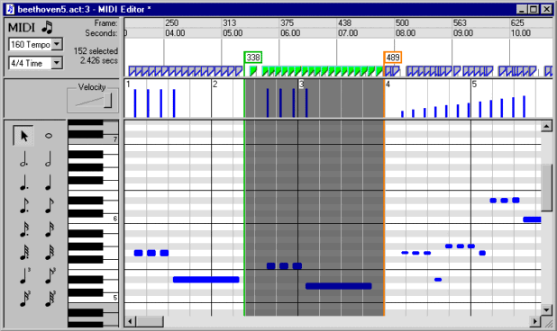
6.1 Musical Terms & Notation
There are a number of terms associated with music. Tempo, time,
measures, beats, etc... Don't worry if you lack a music
background. Just remember tempo controls how fast
AIBO plays your music. Trial & error works
fine for everything else. Try something, preview it, and edit
until it sounds
good. If you want more details, read on...
Sheet music is drawn in
measures, to help those reading the music keep
track. A measure is a collection of beats -- commonly 3 or 4 per
measure. Tempo
is the number of beats per minute. Velocity simply means
volume or loudness.
A tempo of 120 means there
are 120 beats per minute. A music time of 3/4 means
there are 3 beats
per measure, and 4/4 means 4 beats per measure.
Note lengths are in terms of 4-beat measures. A whole note is 4
beats (ie: a whole measure), and quarter-note is one beat. See
table to right.
There are variations in note length. Notes can be "dotted"
which
increases their duration by 50%, and a triplet note is 2/3
normal length. ie: A half-note is 2
beats. A dotted half note is 3
beats. A triplet quarter-note is 2/3's of a beat.
|
|
|
Whole Note
|
Full measure
|
| 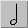 |
Half Note
|
Half a measure
|
|
Quarter Note
|
1/4 of measure
|
|
8th Note
|
1/8 of measure
|
|
16th Note
|
1/16 of measure
|
|
32nd Note
|
1/32 of measure
|
|
6.2 Navigating MIDI Files
| An orange marker bar shows the
current time position.
Left-clicking
in the ruler, velocity, or score sheet panes, moves the marker. |
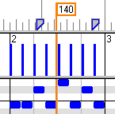
|
|
|
Click-n-drag
in the ruler bar (above the data pane), and a green selection marker
appears at the starting point. Skitter highlights between the
markers & changes any included keyframe tabs green. All
LED's are selected.
|
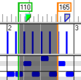 |
|
|
Click-n-drag
in the score sheet pane
(below the ruler & velocity bars), to select one or more
notes. Once you unclick, the green marker disappears and
selected notes are highlighted orange. You can extend a
selection by pressing SHIFT, while selecting additional notes.
|
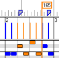 |
6.3 Edit MIDI Notes
|
6.3.1 Set MIDI Velocity (Volume)
You select loudness from the velocity slider, or
by clicking-n-dragging
a line over the over the or brightness with the left-most
toolbar. Choose a value from 0% to100%.
|
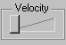 |
|
6.3.2 Adding MIDI notes
Adding
notes is easy. First select a MIDI note length, then click in
the score sheet where you want the note. Alternatively, use the
piano
bar to preview & add notes.
|
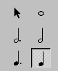 |
|
6.3.3 Changing MIDI Notes Length
Click on an MIDI note to highlight it. The
note turns orange
with a black border. You can move the highlighted note using
keyboard,
or click-n-drag the orange highlighted note with the mouse.
To stretch the note, position mouse on its
right-most edge. A resizing cursor appears.
Click-n-drag to stretch or shrink the note. Note: If you
select multiple notes, the resize cursor won't appear -- only one note
can be resized at a time.
|
 |
|
6.3.4 Changing MIDI Note Velocity
There are two ways to change the volume. You can
click-n-drag over the velocity/volume bar (shown left), or
alternatively select & highlight notes then use the volume slider.
|
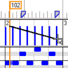 |
6.4 MIDI Note Overlaps
AIBO doesn't support playing
multiple MIDI notes at once. Skitter highlights such
problems in red, and will prompt you to correct them whenever you
save. You can also clean up overlaps by selecting:
Sound Menu -> Remove MIDI Overlaps
Skitter can fix these problems automatically, by adjusting the MIDI
score. Notes are truncated whenever a new note
begins. The truncated notes don't necessarily sound bad
(something like a staccato effect).
|
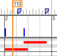 |
6.5 MIDI Special Effects
- Insert Silence. Convenient for
shifting MIDI note's an exact number of seconds or frames.
- Scaling MIDI Note Lengths. Stretch/shrink
note durations to exactly match motion or LED's.
6.6 Convert MIDI into Wave
Skitter can convert/render MIDI into Wave files. You
normally shouldn't do this, since the sound file size grows many
fold. However, for certain limited special effects (such as
overlaying notes on other wave files) it can be very
useful.
Conversion cannot be undone so save your MIDI file beforehand.
|
6.7 Sound Start Time
AIBO supports starting sound playback
at specific
times. This is useful for aligning sound to
motions. The start time can be specified as either motion
frames, or in time (seconds).
AIBO waits the specified interval, relative to the start of motion
& LED's, then begins the sound playback.
|
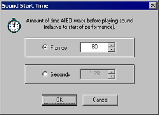
|
6.8 Undo/Redo Changes
If you make a change that doesn't work out, simply undo
it
(Edit Menu->Undo). Skitter supports unlimited undo (ie:
all edits since the MIDI file was loaded, or last platform
conversion). If you undo too
much, you can reapply changes (Edit Menu->Redo).
Keyboard shortcuts of Ctrl+Z (Undo) and Ctrl+Y (Redo)
are available.
6.9 The Splitter Bar
The vertical splitter bar allows two views of the MIDI
file
at once. To adjust the position of the splitter bar, select:
"Window Menu -> Split Window".
You can
move the splitter at any time. To dock the splitter bar
(hide it), simply drag the
splitter to its left-most position.
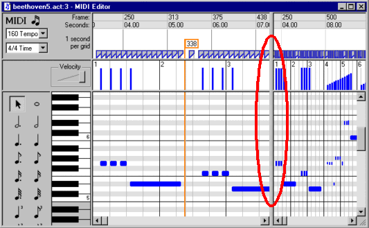
|